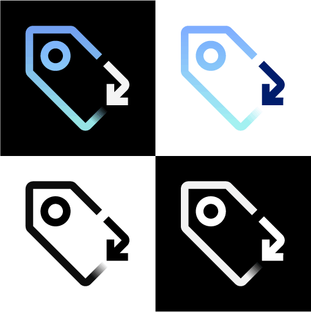

UI Design
/ /
UX Design
/ /
User Testing
I spent a year as a visual designer on a cross-functional Agile team for an internal website-building service. I collaborated with UX designers to achieve user-focused designs and completed user testing to ensure usability.
As the team transitioned from Sketch/Zeplin to Figma, I held workshops and individual Q&A sessions to get the designers and developers acclimated to the new tool. I also created a file management system to streamline our workflow and facilitate the handoff to development.
My work entailed working closely with fellow designers, developers, and our product team to align with stakeholder interests and business goals. I completed the visual design, usability testing, and quality assurance for several user-requested features that are now in production.
As a visual designer, I led the team’s transition to a new internal design system. I updated our components and layouts to adhere to the guidelines, and throughout the process, contributed various original icons and components back to the design system.
